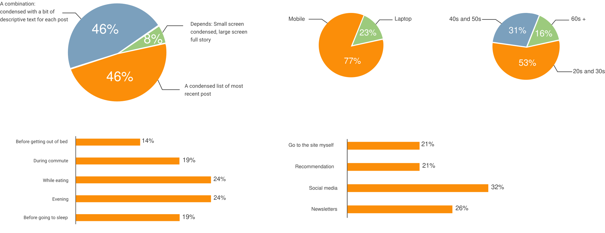
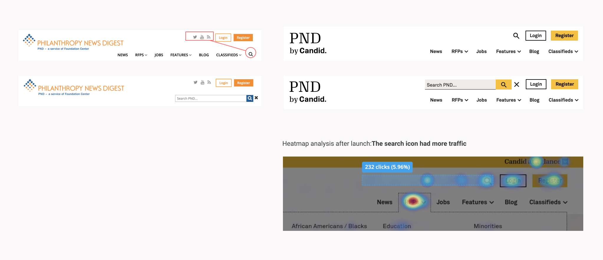
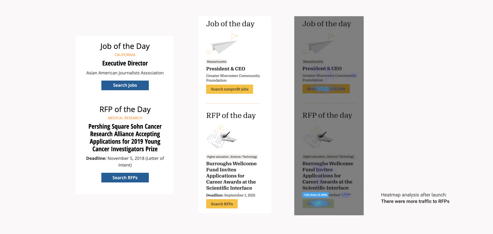
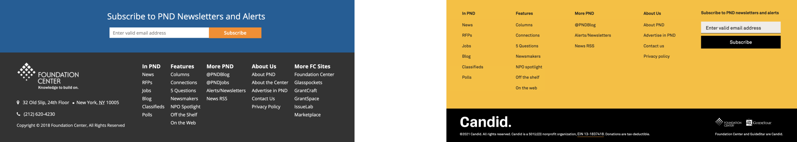

01 · Challenge
Rebrand a live news site without breaking what already worked.
The previous version was operational but carried outdated visual elements, unused modules, and patterns that no longer matched Candid's brand guidelines.
After joining Candid, I was assigned PND immediately. The goal was a site that felt more informational and visually consistent, with targeted UX improvements in the areas readers used most.
Restrictions: Limited flexibility to modify HTML elements. The entire site needed to be rebranded mainly with CSS, so design decisions had to focus around the existing layout.

02 · Research
Interviews, surveys, and competitive patterns.
Stakeholder interviews mapped the editorial workflow. Reader surveys validated how people actually consumed news on the site.
A series of interviews and meetings were held with stakeholders and managers to understand the site's workflow and strategy. One key goal was making it easier to browse articles and blog posts.
Survey: Questionnaires asked readers about news-reading habits on various sites, conducted in person at the organization's library and as an online poll with colleagues.

Findings
- Most users read news on mobile.
- Readers preferred condensed post previews over long descriptions in list views, which helped align stakeholders on a scannable blog layout.
- Most users arrived at a single article from social or newsletters. Similar-post recommendations were needed to keep them reading.

I reviewed other news sites to see how they organized list views, article pages, and navigation. Common patterns were presented to stakeholders to ground design decisions in established reading conventions.
03 · Design
CSS-first iterations on the pages readers hit most.
Frequent stakeholder check-ins, three versions per major screen, and heatmap-informed changes to header, jobs, RFPs, footer, and blog list views.
- We met with stakeholders and the manager regularly for development updates and mockup revisions.
- I made three versions of any significantly changed page, then iterated on the chosen direction. This saved decision time and reduced rework.


Search up, social down
Moved search to the top for visibility. Social icons were rarely used; only Twitter stayed, moved to the footer.
High-traffic sections, higher visibility
Jobs and RFPs drove significant traffic. Illustrations made these entry points easier to spot on the homepage.
Scannable lists, visible subscribe
Replaced long blog previews with shorter cards. Placed the subscribe form in the footer corner where it was visible without overpowering navigation.




04 · Impact
A site built for how grantmakers actually find content.
Post-launch analytics confirmed the redesign held traffic and engagement across the sections we prioritized: news articles, jobs, RFPs, and newsletter signups.
How readers arrive
Email readers averaged 3.7 views per visit, the highest depth of any channel.
Top entry points
- News articles Primary landing path from search and social
- Jobs board Highest average engagement time (~2 min)
- RFP listings Strong key-event conversion on grant opportunities
- Homepage Hub for returning direct and email traffic
Launch feedback was positive and traction improved. After release, heatmaps were monitored continuously for bugs and interaction issues.
05 · Takeaways
What I'd carry to the next editorial redesign.
- User data validates a wide range of design decisions and keeps stakeholders grounded in reader needs.
- Multiple versions of the same screen speed up review when changes are significant.
- Regular stakeholder check-ins surface constraints early and build buy-in throughout the process.
- Know all technical constraints before starting design. On PND, CSS-only scope shaped every layout call.
- Ticket design and dev work with realistic sprint deadlines, and test across browsers in parallel with build.